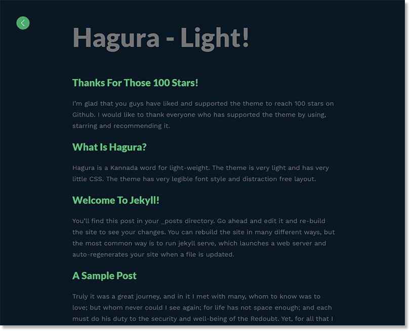
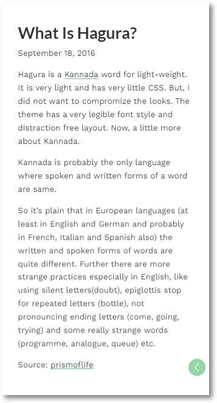

Documentation
Features:
Hagura is a theme made for blogs with long text paragraphs. Made to be easy on eyes as well.
Suitable fonts are selected for better readability. Since the theme is created for smartphone reading, the theme is very light so that it loads instantly on a slow data connection.
The theme comes with pre-installed analytics, disqus and html compressor. But make sure you change key parameters in the _config.yml file.
Switch Night-Mode
The best part is the night-mode that comes with this theme. Once you click on night-mode, the website remebers it untill you close or toggle!
Installation
- Fork the repository
- Go to settings and set Github Pages source as master.
- Your new site should be ready at https://username.github.io/hagura/
Default theme will look like this

Switch to Dark Theme

This theme is responsive.

Development
Make changes to the master branch and create a pull request. Do not use gh-pages branch as it is used to host the theme.
License
MIT License
Version 1.0
- Description along with the title in the index page.
- Removed ugly theme switch icon and added text link.